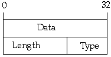

A Typical Object Handle
The first word points to the data portion of the object. That is, the instance variables but not any class variables or methods. The second word points to the class of the object. The class contains all the class, or "static", variables as well as all the code for the methods of that class.
Arrays are represented in a similar way. As with normal objects, the first word of an array handle points to the data portion of the array. The second word, however, does not contain a class pointer. Instead it contains the length of the array and some bits to indicate the type of the array, e.g. array of characters, integers, or objects.

An Array Handle
Implementing Native Methods
Generated with CERN WebMaker